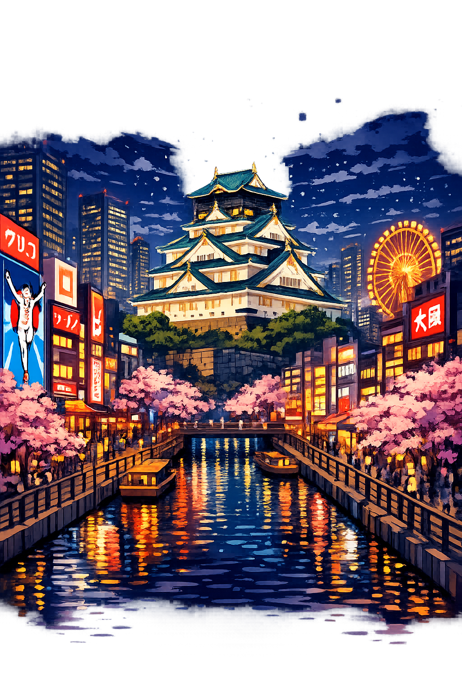

The Authentic Orthography
Merchant City · The Nation's Kitchen · Kansai's Beating Heart

Why Ōsaka.com is the correct form
大阪
The name in its original Japanese form. The kanji 大 (o) means "large" or "great," while 阪 (saka) means "slope" or "hill." Together they evoke the topography of the Uemachi Plateau — the city's ancient heart.
osaka
Stripped of its Japanese identity, the name was reduced to five Latin letters. Travel guides and corporations claimed it. The long vowel, the kanji, the history — all erased by systems that only understand A-Z.
Osaka
The macron on O restores the long vowel and the dignity of the name. This is not decoration — it is Hepburn accuracy. The domain encodes to Punycode, but the browser displays the truth.
Ōsaka.com → xn--saka-k3a.com
The non-ASCII character o (U+014D) is encoded while the ASCII remains visible. To the DNS, it is Punycode. To humanity, it is Osaka.
Where osaka stands in the PUNYCODEX elegant tier system
Ōsaka is Tier 1 because it represents the highest authentic orthography of its tradition. The original script and Unicode restoration preserve the scholarly standard — to strip these characters would be to Latinize, to flatten, to erase what makes the name itself.
Unlike Greek names, where Tier 1 requires both stress and length marks, non-Greek canonical forms are Tier 1 when they preserve the authentic characters of their source tradition. The ASCII fallback osaka is a modern convenience, not the original. Tier 1 here is a declaration of fidélity to source.
How the merchant city was truly spoken
Japan's merchant capital — where food, laughter, and neon never sleep
Osaka is not merely a city. It is the nation's kitchen — the beating heart of Kansai where merchants built empires on street corners, where comedy was born from hardship, and where the neon glow of Dotonbori reflects off canals that have carried cargo for four centuries.
Takoyaki sizzling on iron plates, okonomiyaki layered with precision, kushikatsu fried to golden perfection. The city that eats first and asks questions later.
Toyotomi Hideyoshi's fortress, rebuilt in concrete and gold after burning three times. Five stories of history rising above the moat, surrounded by 600 cherry trees.
The neon canal. Giant mechanical crabs, flashing billboards, and the running man sign. Osaka's entertainment district is a sensory symphony of commerce and chaos.
Manzai, stand-up, and the legendary Yoshimoto Kogyo. Osaka gave Japan its sense of humor — fast-talking, self-deprecating, and relentlessly warm.
From ancient capital to merchant metropolis
Long before Edo or Kyoto rose to prominence, Naniwa served as Japan's gateway to the continent. As early as the 5th century, the port connected Yamato to Korea and China. By the 7th century, Emperor Kotoku made it his capital — the first in recorded Japanese history. The remnants of the Naniwa Palace still whisper of a time when Osaka was the center of the world.
In 1583, Toyotomi Hideyoshi — the peasant who became ruler of Japan — chose Osaka as the site of his fortress. The original castle was the largest in the country, its gold-leafed keep visible for miles. Though it fell to Tokugawa Ieyasu in 1615 and burned to its foundations, the rebuilt concrete keep stands as a monument to ambition itself.
Excluded from politics by the Tokugawa shogunate, Osaka turned to commerce. The city became "The Nation's Kitchen" — the distribution hub for rice, sake, and goods from across Japan. The Dojima Rice Exchange invented futures trading. Kabuki and bunraku flourished. Deprived of swords, Osaka forged wealth.
Today Osaka is Japan's third-largest city and the heart of the Keihanshin megalopolis. Home to Panasonic, Sharp, Nintendo's origins, and Universal Studios Japan. The 1970 World Exposition announced Osaka's rebirth as a city of technology. Yet beneath the skyscrapers, the merchant spirit endures — in every food stall, every comedy club, every warm Kansai greeting.
How Osaka has been written across time and systems
The Hepburn romanization with macron. This is the scholarly standard used in academic texts, international standards (ISO 3602), and by the Japan Foundation. The macron on O marks the long vowel [oː], distinguishing it from the short o found in words like osoi (slow).
The ASCII-constrained form used by airlines, URLs, and most English-language media. It is phonetically incomplete but functionally dominant. The missing macron erases the vowel length distinction central to Japanese phonology.
Osaka is the merchant city — the commercial soul of Japan. But it is not alone. Across the encoded web, the authentic names of cities, gods, and mythic figures have been restored — each with its own domain, its own lore, its own truth.
This is not a directory. This is a resurrection.
Enter the CodexSee how Osaka behaves in the PUNYCODEX Type Tool — with predictive autocomplete, character-by-character breakdown, and scholarly constraint validation.
osaka
→
Osaka